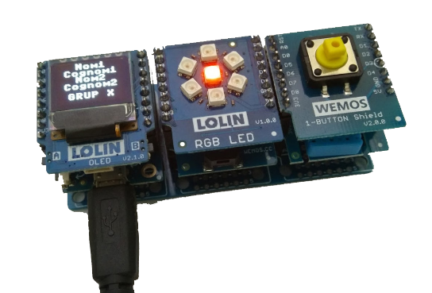

El laboratori virtual micropython és una eina desenvolupada al INS Príncep de Viana per diversos professors i alumnes del màster que han impartit classes al nostre centre.
El projecte neix l'any 2018 quan els professors que havíem de donar 3r d'ESO al curs 2018-19 al nostre centre, en Jose Toro i en Jordi Orts, després d'utilitzar els mòduls D1 mini a Batxillerat en llenguatge C amb l'entorn Arduino IDE, i veient que feia poc temps s'havia creat un firmware micropython per al microcontrolador ESP8266 que incorpora el D1 mini, decidim dissenyar un entorn de treball físic, amb els mòduls reals, on els alumnes de 3r d'ESO puguin aprendre a programar d'una forma motivadora.
Com l'objectiu era ensenyar als alumnes les estructures de programació (bucles, decisions ...) vam dissenyar una biblioteca que facilités l'accés al el maquinari dels mòduls D1 mini.
D'aquí surten les ordres polsador(), toca() ...
En aquest curs i gràcies a l'ajut d'en Borja Diaz, alumne al nostre centre del pràcticum del màster d'Educació Secundària de la UPC, vam soldar els primers 5 kits i dissenyar les primeres activitats, amb un important èxit amb aquesta promoció. En aquest curs el projecte era un telègraf i utilitzavem l'IDE uPyCraft.
En aquest curs i gràcies a l'ajut d'en Alejandro Pérez, alumne al nostre centre del pràcticum del màster d'Educació Secundària de la UPC, vam voler millorar les activitats i documentació, passant a l'actual projecte de l'estació meteorològica.
Quan l'Alejandro estava a punt de c0omençar la seva actuació a les aules, ens vam trobar tots confinats a casa per la pandèmia de la COVID. Ràpidament vaig crear la primera versió d'aquest laboratori virtual i l'Alejandro va refer la documentació. El laboratori virtual estava generat en PHP al meu servidor públic i l'entorn de treball va passar a remot a replit, que en aquella època oferia comptes gratuïts a professors i estudiants.
La clau era canviar la biblioteca D1mini, mantenint el nom de les funcions i fent-ne una simulació. Aquesta és la versió actual d'aquesta biblioteca:
A la #JPRE20 vam fer una ponència amb aquesta experiència de dos anys:
Vam trobar que el laboratori virtual era una gran eina. No només servia per substituir el laboratori real en temps de pandèmia, també era un ajut a l'alumne per treballar a casa. Per altra banda, després de l'èxit a la #JPRE20, volíem compartir aquesta eina am altres centres. Però el laboratori tenia un cost, econòmic (servidor a Internet) i personal (necessitat de gestionar els alumnes amb comprtes propis amb usuari i contrasenya). Per altra banda replit anunciava el fi dels seus comptes educatius gratuïts per finals de l'any 2020. Calia fer un pas endavant, i ràpid.
Al curs passat la meva filla Ingrid, actualment enginyera industrial, feia una matèria a la UPC de Terrassa amb la Raspberry pi. Amb el confinament van treballar amb una màquina virtual, i em va ensenyar la potència de la biblioteca Flash de python, que serveix per crear servidors webs locals. Teníem la solució! Vaig traslladar el meu laboratori virtual PHP de servidor públic a codi python a un servidor local. Vam canvia a l'entorn de desenvolupament Thonny, disponible als respositoris estàndard de les principals distribucios GNU/Linux, i que a les seva darrera versió permet treballar tant amb el laboratori virtual com amb el maquinari real. Amb l'ajut de Gerard Homs, alumne al nostre centre del pràcticum del màster d'Educació Secundària de la UNIR, i del professor del nostre departament Miguel Lozano, vam utilitzar-lo als ordinadors dels alumnes. Les pràctiques amb micropython havíen sobreviscut un curs mes!
Finalment, i gràcies al Dr. Joan de Gràcia, vam aconseguir tenir el laboratori virtual com un paquet de la Linkat, integrat al pefil de robòtica i fàcil d'instal·lar. Havíem aconseguit facilitar a altres centres l'ús d'aquesta eina.
Amb la posada de llarg del nostre laboratori virtual a la Linkat vaig aprofitar per millorar la documentació, ara en format de pàgina web i integrada al servidor web local.
Jordi Orts
Maig 2021